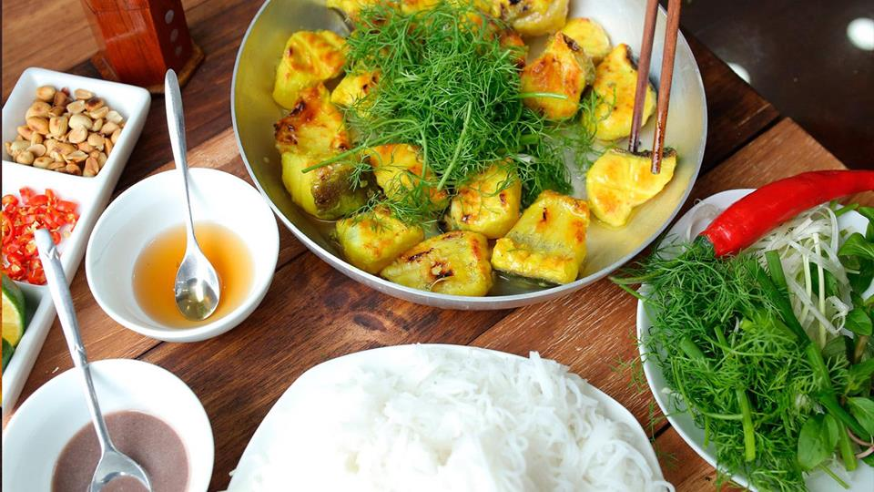

Cha Ca La Vong

Description
Vietnamese turmeric fish with noodles (Cha Ca La Vong) is a delicious and iconic dish of Hanoi. Chunks of flavorful fish are plated on a bed of aromatic green scallions and dill, boasting a unique dining experience.
Ingredients
- Monkfish
- Scallions
- Dills
- Turmeric Marinade
- Vermicelli Noodles (aka Bun)
- Roasted Peanuts
- Shrimp Paste
Steps
- Slice fish into 1/2 – 3/4-inch thick pieces. You may need to slice on an angle to have wide pieces.
- Peel galangal, slice and finely chop. If possible, use a pestle and mortal to crush into finer pieces (about 3 tablespoons).
- In a mixing bowl, add fish and all ingredients in the first group and mix well. Refrigerate and marinate for at least 30 minutes or more for a tastier result.
- Add fish slices to the pan, stir to mix with scallions and dills. Be careful to not break the fish slices.
- Transfer everything to a preheated cast iron fajita plate or a regular plate and serve immediately with noodles, roasted peanuts and dipping sauce.